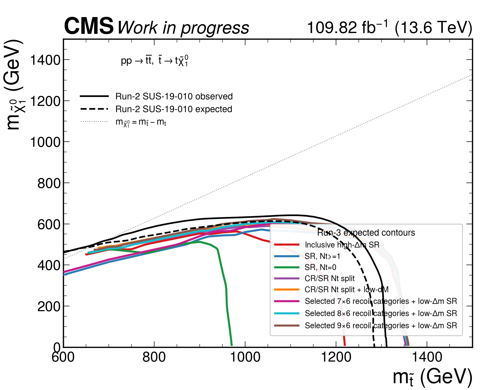

High/Low-dM Run-3 Stop Pipeline
Generated 2026-07-05; updated 2026-07-07 with the selected 9x6 recoil-category Combine limits and low-dM physical-variable plots.
Definition check: inclusive SR means high-dM SR with no N_t requirement. It does not remove the SR selection. JEC and MET unclustered shapes are deferred.
17-bin fix: the main high-dM SR search-bin plot uses inclusive SR with no N_t requirement; the N_t >= 1 version is kept only as a diagnostic.
Selected-category recoil study: the selected high-dM SR categories are split into six recoil bins, 54 bins total after prepending N_b >= 1, N_t = 0, N_W = 0 and N_b >= 1, N_t = 0, N_W >= 1. Category definitions are drawn as boxed labels in the plot. The current selected-category limit uses these 54 high-dM bins plus the one-bin low-dM SR; the older selected-bin N_t-split limit remains listed only as a deprecated diagnostic.
Expected Limit Overlay

Eight Run-3 variants overlaid with Run-2 SUS-19-010 contours; signal mass-point dots removed. Limit Summary
Variant Points Expected-excluded points Median expected r Inclusive high-dM SR (no N_t condition) 352 47 21.4 High-dM SR, N_t >= 1 352 63 17.4 High-dM SR, N_t = 0 352 20 69.5 High-dM CR/SR split by N_t 352 65 14.8 High-dM N_t split + low-dM SR 352 65 14.7 Selected high-dM 7x6 recoil categories + low-dM SR 352 65 18.3 Selected high-dM 8x6 recoil categories + low-dM SR 352 66 13.9 Selected high-dM 9x6 recoil categories + low-dM SR 352 69 13.1 selected 17-bin categories 4,5,8,9,14,15,16 split by N_t + low-dM SR (deprecated diagnostic) 352 44 27.4
Variant Common points Median ratio to inclusive Better points Worse points High-dM SR, N_t >= 1 346 0.538 284 61 High-dM SR, N_t = 0 351 4.05 22 327 High-dM CR/SR split by N_t 351 0.533 349 0 High-dM N_t split + low-dM SR 351 0.532 349 0 Selected high-dM 7x6 recoil categories + low-dM SR 347 0.552 295 52 Selected high-dM 8x6 recoil categories + low-dM SR 351 0.547 332 16 Selected high-dM 9x6 recoil categories + low-dM SR 351 0.538 349 0
Individual Limit Contours Inclusive high-dM SR (no N_t condition) High-dM SR, N_t >= 1 High-dM SR, N_t = 0 High-dM CR/SR split by N_t High-dM N_t split + low-dM SR Selected high-dM 7x6 recoil categories + low-dM SR Selected high-dM 8x6 recoil categories + low-dM SR Selected high-dM 9x6 recoil categories + low-dM SR selected 17-bin categories 4,5,8,9,14,15,16 split by N_t + low-dM SR (deprecated diagnostic) CR Plots
CR signal policy: CR plots are drawn without T2tt signal overlays.
high-dM CR $U\!\!\!\!/_{T}$ bins, inclusive N_t high-dM CR $U\!\!\!\!/_{T}$ bins split by N_t high-dM LLCR $U\!\!\!\!/_{T}$ bins high-dM QCDCR $U\!\!\!\!/_{T}$ bins high-dM Gamma CR $U\!\!\!\!/_{T}$ bins high-dM DY2E CR $U\!\!\!\!/_{T}$ bins high-dM DY2M CR $U\!\!\!\!/_{T}$ bins high-dM LLCR $U\!\!\!\!/_{T}$ bins split by N_t high-dM QCDCR $U\!\!\!\!/_{T}$ bins split by N_t high-dM Gamma CR $U\!\!\!\!/_{T}$ bins split by N_t high-dM DY2E CR $U\!\!\!\!/_{T}$ bins split by N_t high-dM DY2M CR $U\!\!\!\!/_{T}$ bins split by N_t low-dM CR one-bin overview low-dM LLCR one-bin low-dM QCDCR one-bin low-dM Gamma CR one-bin low-dM DY2E CR one-bin low-dM DY2M CR one-bin SR and Diagnostic Plots
high-dM SR $U\!\!\!\!/_{T}$ bins, inclusive N_t high-dM SR $U\!\!\!\!/_{T}$ bins split by N_t high-dM SR 17 search bins, inclusive N_t high-dM SR 17 search bins, N_t >= 1 diagnostic high-dM selected 9 x 6 recoil search bins with prepended N_b >= 1, N_t = 0, N_W = 0 and N_b >= 1, N_t = 0, N_W >= 1 categories low-dM CR/SR one-bin overview low-dM SR one-bin Low-dM Physical Variable Plots
Low-dM plot policy: low-dM combine still uses a one-bin SR for now, but the CR/SR distributions below are drawn in physical variables for validation. CR plots exclude T2tt signal overlays; low-dM SR plots include the two signal benchmarks.
Low-dM LLCR
Low-dM LLCR: $E\!\!\!\!/_{T}$ (GeV) Low-dM LLCR: $H_{T}$ (GeV) Low-dM LLCR: $N_{j}$ Low-dM LLCR: $N_{b}$ medium Low-dM LLCR: $N_{b}$ loose Low-dM LLCR: $N_{e}$ veto Low-dM LLCR: $N_{\mu}$ loose Low-dM LLCR: low-$\Delta m$ $m_{T}^{b}$ (GeV) Low-dM LLCR: $E\!\!\!\!/_{T}/\sqrt{H_{T}}$ Low-dM LLCR: ISR $p_{T}$ (GeV) Low-dM LLCR: $\Delta\phi$(ISR, $E\!\!\!\!/_{T}$) Low-dM LLCR: low-$\Delta m$ $p_{T}^{b}$ (GeV) Low-dM LLCR: $N_{ISR}$ Low-dM LLCR: Leading low-$\Delta m$ AK8 $p_{T}$ (GeV) Low-dM LLCR: Leading low-$\Delta m$ AK8 $m_{SD}$ (GeV)
Low-dM QCDCR
Low-dM QCDCR: $E\!\!\!\!/_{T}$ (GeV) Low-dM QCDCR: $H_{T}$ (GeV) Low-dM QCDCR: $N_{j}$ Low-dM QCDCR: $N_{b}$ medium Low-dM QCDCR: $N_{b}$ loose Low-dM QCDCR: $N_{e}$ veto Low-dM QCDCR: $N_{\mu}$ loose Low-dM QCDCR: low-$\Delta m$ $m_{T}^{b}$ (GeV) Low-dM QCDCR: $E\!\!\!\!/_{T}/\sqrt{H_{T}}$ Low-dM QCDCR: ISR $p_{T}$ (GeV) Low-dM QCDCR: $\Delta\phi$(ISR, $E\!\!\!\!/_{T}$) Low-dM QCDCR: low-$\Delta m$ $p_{T}^{b}$ (GeV) Low-dM QCDCR: $N_{ISR}$ Low-dM QCDCR: Leading low-$\Delta m$ AK8 $p_{T}$ (GeV) Low-dM QCDCR: Leading low-$\Delta m$ AK8 $m_{SD}$ (GeV)
Low-dM Gamma CR
Low-dM Gamma CR: $E\!\!\!\!/_{T}$ (GeV) Low-dM Gamma CR: $H_{T}$ (GeV) Low-dM Gamma CR: $N_{j}$ Low-dM Gamma CR: $N_{b}$ medium Low-dM Gamma CR: $N_{b}$ loose Low-dM Gamma CR: $N_{e}$ veto Low-dM Gamma CR: $N_{\mu}$ loose Low-dM Gamma CR: low-$\Delta m$ $m_{T}^{b}$ (GeV) Low-dM Gamma CR: $E\!\!\!\!/_{T}/\sqrt{H_{T}}$ Low-dM Gamma CR: ISR $p_{T}$ (GeV) Low-dM Gamma CR: $\Delta\phi$(ISR, $E\!\!\!\!/_{T}$) Low-dM Gamma CR: low-$\Delta m$ $p_{T}^{b}$ (GeV) Low-dM Gamma CR: $N_{ISR}$ Low-dM Gamma CR: Leading low-$\Delta m$ AK8 $p_{T}$ (GeV) Low-dM Gamma CR: Leading low-$\Delta m$ AK8 $m_{SD}$ (GeV) Low-dM Gamma CR: $N_{\gamma}$ medium Low-dM Gamma CR: Photon $U\!\!\!\!/_{T}$ (GeV) Low-dM Gamma CR: $N_{j}$ photon-cleaned Low-dM Gamma CR: $N_{b}$ photon-cleaned Low-dM Gamma CR: Photon-cleaned $H_{T}$ (GeV)
Low-dM DY2E CR
Low-dM DY2E CR: $E\!\!\!\!/_{T}$ (GeV) Low-dM DY2E CR: $H_{T}$ (GeV) Low-dM DY2E CR: $N_{j}$ Low-dM DY2E CR: $N_{b}$ medium Low-dM DY2E CR: $N_{b}$ loose Low-dM DY2E CR: $N_{e}$ veto Low-dM DY2E CR: $N_{\mu}$ loose Low-dM DY2E CR: low-$\Delta m$ $m_{T}^{b}$ (GeV) Low-dM DY2E CR: $E\!\!\!\!/_{T}/\sqrt{H_{T}}$ Low-dM DY2E CR: ISR $p_{T}$ (GeV) Low-dM DY2E CR: $\Delta\phi$(ISR, $E\!\!\!\!/_{T}$) Low-dM DY2E CR: low-$\Delta m$ $p_{T}^{b}$ (GeV) Low-dM DY2E CR: $N_{ISR}$ Low-dM DY2E CR: Leading low-$\Delta m$ AK8 $p_{T}$ (GeV) Low-dM DY2E CR: Leading low-$\Delta m$ AK8 $m_{SD}$ (GeV) Low-dM DY2E CR: Dielectron $U\!\!\!\!/_{T}$ (GeV) Low-dM DY2E CR: $m_{ee}$ (GeV) Low-dM DY2E CR: $N_{j}$ lepton-cleaned Low-dM DY2E CR: $N_{b}$ lepton-cleaned Low-dM DY2E CR: Lepton-cleaned $H_{T}$ (GeV)
Low-dM DY2M CR
Low-dM DY2M CR: $E\!\!\!\!/_{T}$ (GeV) Low-dM DY2M CR: $H_{T}$ (GeV) Low-dM DY2M CR: $N_{j}$ Low-dM DY2M CR: $N_{b}$ medium Low-dM DY2M CR: $N_{b}$ loose Low-dM DY2M CR: $N_{e}$ veto Low-dM DY2M CR: $N_{\mu}$ loose Low-dM DY2M CR: low-$\Delta m$ $m_{T}^{b}$ (GeV) Low-dM DY2M CR: $E\!\!\!\!/_{T}/\sqrt{H_{T}}$ Low-dM DY2M CR: ISR $p_{T}$ (GeV) Low-dM DY2M CR: $\Delta\phi$(ISR, $E\!\!\!\!/_{T}$) Low-dM DY2M CR: low-$\Delta m$ $p_{T}^{b}$ (GeV) Low-dM DY2M CR: $N_{ISR}$ Low-dM DY2M CR: Leading low-$\Delta m$ AK8 $p_{T}$ (GeV) Low-dM DY2M CR: Leading low-$\Delta m$ AK8 $m_{SD}$ (GeV) Low-dM DY2M CR: Dimuon $U\!\!\!\!/_{T}$ (GeV) Low-dM DY2M CR: $m_{\mu\mu}$ (GeV) Low-dM DY2M CR: $N_{j}$ lepton-cleaned Low-dM DY2M CR: $N_{b}$ lepton-cleaned Low-dM DY2M CR: Lepton-cleaned $H_{T}$ (GeV)
Low-dM SR
Low-dM SR: $E\!\!\!\!/_{T}$ (GeV) Low-dM SR: $H_{T}$ (GeV) Low-dM SR: $N_{j}$ Low-dM SR: $N_{b}$ medium Low-dM SR: $N_{b}$ loose Low-dM SR: $N_{e}$ veto Low-dM SR: $N_{\mu}$ loose Low-dM SR: low-$\Delta m$ $m_{T}^{b}$ (GeV) Low-dM SR: $E\!\!\!\!/_{T}/\sqrt{H_{T}}$ Low-dM SR: ISR $p_{T}$ (GeV) Low-dM SR: $\Delta\phi$(ISR, $E\!\!\!\!/_{T}$) Low-dM SR: low-$\Delta m$ $p_{T}^{b}$ (GeV) Low-dM SR: $N_{ISR}$ Low-dM SR: Leading low-$\Delta m$ AK8 $p_{T}$ (GeV) Low-dM SR: Leading low-$\Delta m$ AK8 $m_{SD}$ (GeV)
Machine-Readable Outputs
summary JSON · selected 7x6 limit JSON · selected 8x6 limit JSON · selected 9x6 limit JSON · partial split limit JSON · plot summary · limit overlay summary